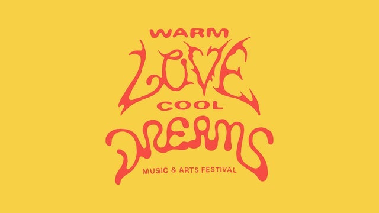

Arts of Life Studio Sale at Warm Love Cool Dreams Music Festival
The wide-ranging, multi-genre festival takes place across the entirety of the Salt Shed facility: indoors, outside on the Fairgrounds, as well as the cocktail bar Three Top Lounge and arcade Elston Electric. Warm Love Cool Dreams proudly features the inclusion of Oddball Market and the Arts of Life Studio Sale, as well as riverboat rides around Goose Island for attendees.